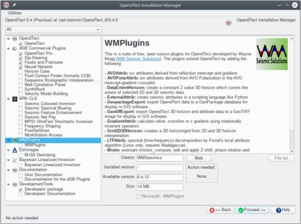

Installation
As of OpendTect 6.4.5 this suite of plugins can be installed using the OpendTect Installation Manager. Just activate the WMPlugins option in the installer.

This will install the wmPlugins into the OpendTect installation folder.
The following instructions are only needed for a manual intallation.
Linux
Sitewide Installation
To install the plugins into the OpendTect program folder (eg /opt/seismic/OpendTect/6.4.0/ ):
-
Copy the contents of the bin/lux64/Release/ folder in the tgz file to /opt/seismic/OpendTect/6.4.0/bin/lux64/Release/;
-
Copy the contents of the plugins/lux64/ folder in the tgz file to /opt/Seismic/OpendTect/6.4.0/plugins/lux64/; and
-
Restart OpendTect.
Per-user Installation
On Linux it is also possible to install the plugin files in a users .od folder. Note that the OpendTect-6.4.0-plugins won't work in OpendTect 6.2.0 and the OpendTect-6.2.0-plugins won't work in OpendTect 6.4.0. See the Frequently Asked Questions for a workaround if you want a per-user installation and want to run multiple versions of OpendTect.
-
Copy the contents of the bin/lux64/Release/ folder in the tgz file to the users .od/bin/lux64/Release/ folder;
-
Copy the contents of the plugins/lux64/ folder in the tgz file to the users .od/plugins/lux64/ folder; and
-
Restart OpendTect.
Windows
Sitewide Installation
To install the plugins into the OpendTect program folder (eg c:\Program Files\Opendtect\6.4.0 ):
-
Copy the contents of the bin\win64\Release\ folder in the zip file to c:\Program Files\Opendtect\6.4.0\bin\win64\Release\ ;
-
Copy the contents of the plugins\win64\ folder in the zip file to c:\Program Files\Opendtect\6.4.0\plugins\win64\ ; and
-
Restart OpendTect.
Per-user Installation
On Windows it is also possible to install the plugin files in a users .od folder. Note that the OpendTect-6.4.0-plugins won't work in OpendTect 6.2 and the OpendTect-6.2-plugins won't work in OpendTect 6.4. See the Frequently Asked Questions for a workaround if you want a per-user installation and want to run multiple versions of OpendTect.
-
Copy the contents of the bin\win64\Release\ folder in the zip file to the users C:\Users\%username%\.od\bin\win64\Release\ folder;
-
Copy the contents of the plugins\win64\ folder in the zip file to the users C:\Users\%username%\.od\plugins\win64\ folder; and
-
Restart OpendTect.